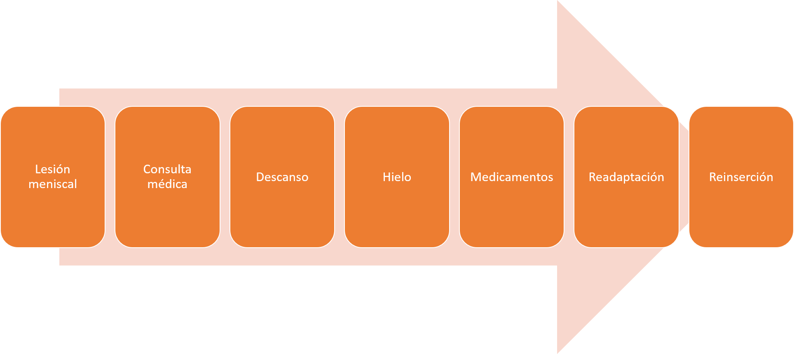
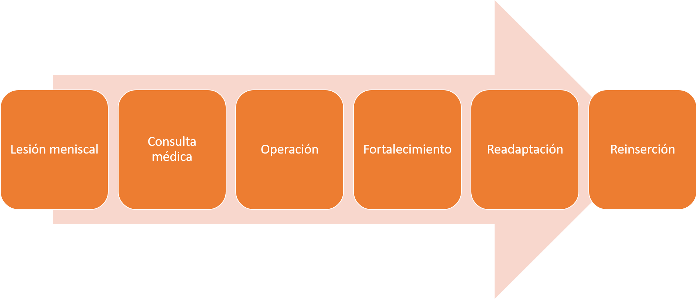
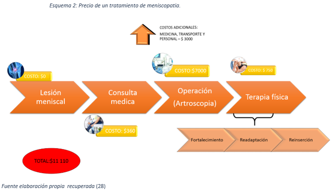

Entonces, ¿Qué son los meniscos?
Son una estructura fibrocartilaginosa en forma de cuña que se encuentra en la articulación de la rodilla entre el fémur y la tibia. Tienen una composición del 74% de agua, los ¾ de su matriz extracelular está constituida por fibras de colágeno, de tipo I en su 90%. En cada rodilla tenemos dos meniscos uno interno y otro externo.(Dr. Alfonso del Corral Salas, n.d.; EVA BELMONTE, n.d.; “Meniscopatía, en qué consiste, síntomas y cómo tratarla,” n.d.)
El menisco interno o también conocido como menisco medial tiene una forma de C, la cual cubre el 30% de la meseta medial. (“Meniscopatía, en qué consiste, síntomas y cómo tratarla,” n.d.; PROAÑO BERNAOLA JOSE, n.d.)
El menisco externo o lateral tiene una forma de O, este cubre el 50% de la superficie tibial lateral. (“Meniscopatía, en qué consiste, síntomas y cómo tratarla,” n.d.; PROAÑO BERNAOLA JOSE, n.d.)
El buen estado de ambos meniscos es importante puesto que estos acompañan a la rodilla en dos importantes movimientos que son el flexo-extensión y la rotación tibial.
¿CUÁLES SON SUS FUNCIONES?
¿QUÉ ES LA MENISCOPATÍA?
La lesión de uno o ambos meniscos es conocida como meniscopatía, este tipo de lesión es una de las más comunes en lesiones de rodillas. A nivel mundial, estudios realizados en Medicina del deporte afirma que la rodilla presenta un 37% de lesiones, de las cuales el 47% son debido a lesiones meniscales. Otro estudio realizado en nuestro país, específicamente en Trujillo demostró de 41 pacientes con sospecha de lesión meniscal el 63% tenía dicha lesión, de los cuales predominando el sexo masculino con 65.9%; el promedio de edad fue 41.3 + 12.2, con un rango de 18 a 69 años de edad. (Dr. Alfonso del Corral Salas, n.d.; El Diagnóstico De Meniscopatía De Rodilla, Ortopedia Traumatología AUTOR, Seminario Fritz ASESOR, & Rodríguez Ghinciulescou, n.d.; EVA BELMONTE, n.d.; “Meniscopatía, en qué consiste, síntomas y cómo tratarla,” n.d., “Meniscopatía - MEDS,” n.d.; Vaziri, Nayeb-Hashemi, Singh, & Tafti, 2008)
Las lesiones producidas en los meniscos pueden ser producidas por distintos factores por efecto de un traumatismo que puede ser por mecanismo de lesión indirecto el cual es producido al sufrir un golpe en la rodilla, también existe el mecanismo directo el cual puede ser causado cuando se da una patada al vació, que en el caso de los futbolistas se da a menudo puesto que en vez de impactar en el balón da una patada al vacío, otra lesión producida de manera directa es cuando una persona se encuentra en cuclillas y se reincorpora de forma brusca hasta una posición derecha. El otro factor de lesión de los meniscos es la degenerativa, la causa principal de esta es la edad que se produce más en personas mayores de 60 años; debido a la edad los meniscos se encuentran envejecidos y debilitados los cuales desencadenan una rotura de menisco por traumatismo o sobrecarga de la articulación. (Bitar Ivan, n.d.; Dr. Alfonso del Corral Salas, n.d.; Operarme.es, n.d.)
¿QUÉ SINTOMAS PRESENTA?
Los síntomas más comunes para poder identificar si uno puede tener problemas con los meniscos son los que se presentan a continuación.

Cuando uno sospecha que puede tener problemas con los meniscos se debe acudir a un médico especialista en traumatología. A continuación se muestra un algoritmo que se usa para determinar el tipo de tratamiento que se deberá llevar de acuerdo al grado de lesión.

Como se muestra en el algoritmo existen dos tipos de tratamientos que de acuerdo al diagnóstico del médico se seguirá una o la otra.
Para ambos tratamientos el medico siempre empieza realizando una exploraciones físicas usando cualquier de las siguientes pruebas la de Mc Murray, la de Appley ola de Steinmann/Steinmann II. Adicional a las anteriores pruebas también se realizan exploraciones complementarias como una resonancia magnética o artroscopia diagnostica, una vez realizado dichos procedimientos el médico indica que tratamiento es el indicado a llevar.
Tratamiento conservador
Este tratamiento consiste en disminuir el dolor e inflamación, por ello el paciente debe mantener un reposo mínimo de 24 a 48 horas. Se usa frio y vendaje compresivo, también se ingiere medicamentos para ayudar a aliviar el dolor. Una vez superada dicha etapa se debe trabajar en la recuperación de la fuerza muscular de los cuádriceps, mejorar la estabilidad de la rodilla, movilidad de la articulación y propiocepción; este tipo de tratamiento se suele usar en casos en los cuales se presentan lesiones parameniscales. (“Meniscopatía. Recuperación y tratamiento fisioterapéutico,” n.d., “Meniscopatía - MEDS,” n.d., “Qué supone una rotura de menisco. Causas, síntomas y tratamiento,” n.d.; Operarme.es, n.d.-a)
El cuadro anterior muestra una línea del tiempo en el cual se muestra todo el proceso que lleva a cabo el paciente desde que se produce la lesión hasta que vuelve a readaptarse. Esta línea del tiempo se realizó junto con los asesores del proyecto.
Tratamiento Quirùrgico
Luego de que el médico haya realizado los exámenes previos y haya determinado que este es el tratamiento adecuado para el tipo de lesión meniscal que se presenta , se realiza la cirugía conocida como artroscopia, la más usada, donde se realiza la extracción del o los meniscos parcial o total; esta operación tiene un tiempo de duración de 30-90minutos. Es dado de alta después de 24 horas realizada la operación. Dentro de aproximadamente 48-72 horas tendrá que empezar con la rehabilitación. Si la rehabilitación se realiza de forma correcta y con la intensidad adecuada, es normal que el paciente tarde entre 2 y 4 meses en poder recuperar el uso funcional completo de la articulación. Para volver a practicar deporte se podrá después de los 3 meses, aunque ello dependerá de cada caso en particular y de sus condiciones personales. (“Meniscopatía, en qué consiste, síntomas y cómo tratarla,” n.d., “Meniscopatía - MEDS,” n.d., Operarme.es, n.d.-a, n.d.-b)
Esta línea de tiempo se muestra el proceso que lleva a cabo un paciente al que se le realiza un operación. Este cuadro también se realizó en conjunto con los asesores del proyecto.
EL caso clínico que nuestro equipo tiene como reto es de un paciente (deportista de ciclismo de alta montaña) que tuvo una cirugía de rodilla, debido a una lesión meniscal el cual es dado de alta a los tres días siguientes. Las indicaciones que tuvo fueron reposo absoluto, analgesia por 15 días y colocación de una férula acrílica. Pero días siguientes se retira la férula por incomodidades y tampoco termina con la terapia. Debido a los incumplimientos el paciente vuelve a tener una recaída.
Para entender más a fondo a nuestro usuario nos centraremos en averiguar sobre los tratamientos de meniscopatía quirúrgicos a nivel nacional y otro de otro país.
Para entender más a fondo a nuestro usuario nos centraremos en averiguar sobre los tratamientos de meniscopatía quirúrgicos a nivel nacional y otro de otro país.
España:
Dicha línea de tiempo mostrada es una recopilación de varias clínicas donde se realizan operaciones y tratamientos de recuperación de meniscopatía. También se muestra los costos que se generan por cada uno de los procedimientos llevados a cabo. Teniendo un aproximado en total de 8200 euros este costo sería en un caso óptimo en el cual el paciente cumpla con todas las indicaciones del médico y los fisioterapeutas; realizando la recuperación en un lapso de 4 meses. Pasado los 4 meses los gastos serán mayores.
A nivel nacional: